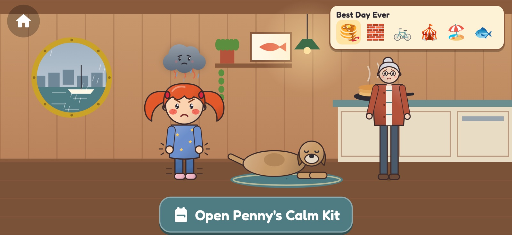

The story
The Best Day Ever
doesn't go to plan.
Penny has planned a perfect Saturday in Frelard (that's Fremont plus Ballard, in Seattle): pancakes, the market, a bike ride, a picnic at the beach and salmon at the Locks. Then the pancakes burn, the bridge goes up, a big kid cuts the line and the picnic gets rained out.
- Ten chapters on real Seattle streets and shores: the Fremont Bridge, the Burke-Gilman Trail, Golden Gardens and the Ballard Locks.
- A cast to love: Penny, who knows every salmon fact there is; her Swedish grandma Mormor; careful Theo; Pip the dog; and Knut, a small troll who changes the rules when he's losing.
- Plan B is sometimes worse than Plan A. The game says so out loud, and shows that she can handle it anyway.
